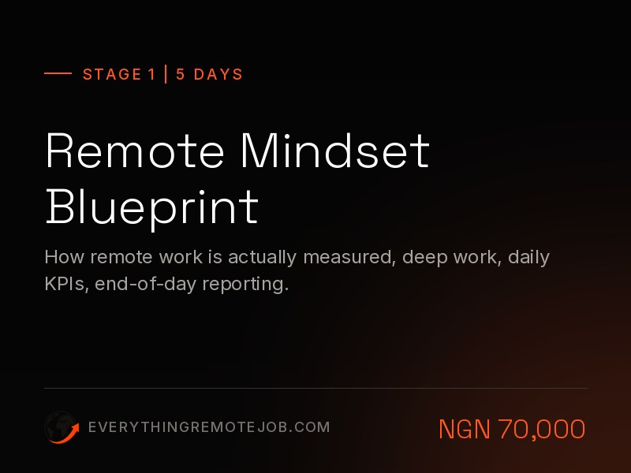
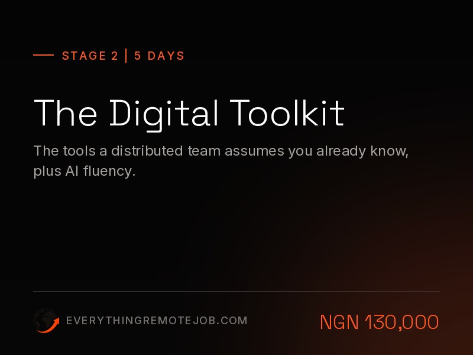
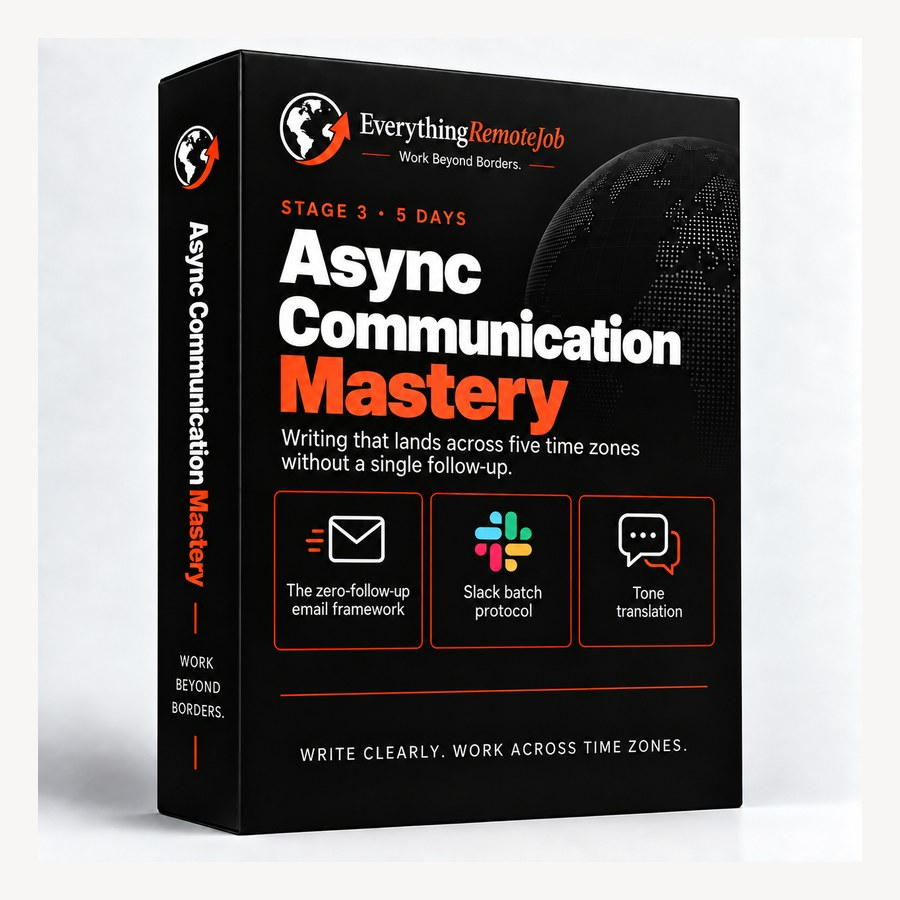
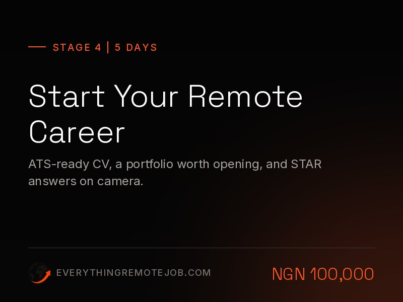
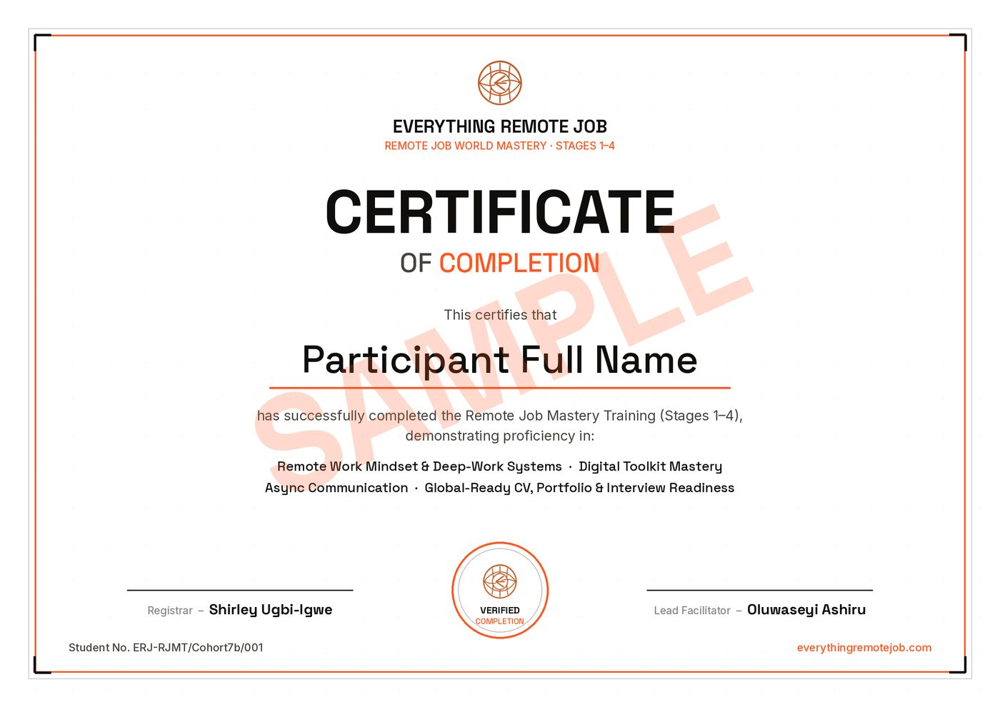

Get Trained And Certified To Work Remotely · Stages 1–4
Build the career assets global employers can read — live, marked, in 20 training days.
The full live build for searches leaking at more than one point: remote work discipline, tools, async communication, CV, LinkedIn, portfolio and interviews. We are accountable for readiness and representation; the market decides when the offer comes.
Bonus included: 90 days of career development at The Mentorine School →Proof of Competence
What You Will Build Across Stages 1–4
Every day produces a real, submittable deliverable. By Stage 4, these become the portfolio that gets you hired — you're not buying a syllabus, you're acquiring competitive global assets.
The Model · Find The Problem, Fix It
Five fingers. One hand.
Your search works like a hand: Capacity, Supply, Representation, Aim and Conversion. An offer comes only when all five hold, and Foundation Training works on every one. Point at a finger to see what it does.
Stage 1 builds the remote operating system — deep work, daily KPIs, end-of-day reporting — and Stage 2 the digital toolkit a distributed team assumes you already run. This is the part no CV rewrite can fake.
The Remote Job Seekers Kit — named boards, companies and salary databases — is delivered the moment you pay, plus the free Remote Jobs (Global+) channel. You will never again wonder where the real roles are.
Stages 2–4 build every asset from scratch: ATS-readable CV, LinkedIn that recruiters find, portfolio, async writing samples and the STAR video — all AI-assisted, all yours to keep.
Stage 4 installs a weekly targeting and application system — which roles, which companies, which regions — powered by the SMART APPLY prompt, so effort goes where offers actually come from.
Async communication mastery (Stage 3), interview coaching and salary negotiation turn replies into signed offers — and we hold this joint with you until you're hired.
The Build · Stages 1–4
Four stages. Twenty days. A hiring-ready you.
Four 5-day sprints. Every day ends with a real deliverable.

Remote Mindset Blueprint
- Protect your peak cognitive window with two 90-min Deep Work blocks daily
- Execute the Pomodoro Protocol — four 25-min sprints, zero self-interruption
- Write 3 measurable KPIs each morning, submit a structured EOD report each evening
- Complete a full physical & digital workspace audit

The Digital Toolkit
- Run screen shares, annotation & chat in Zoom, Google Meet & Microsoft Teams
- Configure cloud recordings with auto-transcription and protected links
- Build a structured project board in Asana, Trello or ClickUp
- Build AI Fluency — prompt craft, AI-assisted drafting and reviewing, and knowing when not to use it
- Co-edit documents in Suggestion Mode with full version history

Async Communication Mastery
- Write Zero-Follow-Up emails that never generate a clarifying reply
- Apply the Batch Message Protocol in Slack & Teams
- Translate warm tone across text without losing directness
- Build your personal "Working With Me" manual + tech fallback plan

Start Your Remote Career
- Build a Remote-First, ATS-compliant CV
- Write a remote-optimised LinkedIn Zone-1 summary
- Curate a 2–3 project digital portfolio with read-me briefs
- Deliver a 2-min STAR-format video interview response
Looking for the sourcing & placement system that comes after the build? That's Stage 5 — Job Application DFY → Not sure whether you need the live cohort at all? Read the honest comparison against the self-paced pack.
The Math
Staying local vs. going global.
One entry-level global role pays back the entire programme fee in under a week.
High inflation exposure. Local administrative overhead. A salary ceiling that erodes in real terms every year.
Hard-currency protection. Tuition is recovered in the first 3 days of remote work.
Certification
Finish certified. Prove it anywhere.
Complete Stages 1–4 and receive the official Remote Job Foundation Training Training certificate — verifying your remote-work mindset, digital toolkit, async communication and global-ready CV, portfolio & interview readiness.

Choose your hour
Three classes. One programme.
We have expanded to make you employable for that remote job — whatever your day already looks like. Same four stages, same modules, same fee, same certificate. The only thing that changes is when you sit down.
Undergraduates, entry-level, and anyone not gainfully employed yet.
Your evenings are your own, so this track takes the earlier hour — done by eight, with the rest of the night for the sprint work. Starting without a job history is a position we build from, not around.
Take the 7 PM Class→The typical nine-to-five professional who can train on weekdays.
The later hour exists for one reason: Lagos traffic and a 6 PM close do not make a 7 PM class. This one starts after you are home, fed and sitting down.
Take the 8 PM Class→The 8 AM to 8 PM professional whose weekdays are simply not available.
Longer sessions, fewer of them, across more calendar weeks — because a track you can actually attend beats a shorter one you keep missing. Nothing is cut; it is redistributed.
Take the Weekend Class→Pick the track you can genuinely keep for the whole programme — attendance, not ambition, is what separates the people who finish. Not sure which fits? Run the free diagnosis first →

Your career, built on both sides
Your Foundation Training includes career development.
Enrol in Remote Job Foundation Training, Stages 1–4, and receive 90-day access to a selected self-study career track at The Mentorine School at no additional cost. Your assessment helps us identify the skills and practical work relevant to your target role.
- One career track
- Roadmap, courses and practical work
- 90 days from the day you activate
- No second payment
Delivered in partnership with The Mentorine School. Included with Foundation Training and Get Your Dream Job Offer; not with single stages.
Your assessment decides how you use it.
We assign the learning and practical work in your track that closes it, alongside the live stages.
We put your time on the other gaps your assessment found. Your access at The Mentorine School stays open for further development.
- One self-study career track at The Mentorine School, matched to your target role
- The track’s roadmap, available courses and practical exercises
- 90 days of access, counted from the day you activate, not the day you pay
- No second payment. You are never asked to pay to claim it
- Enrol and pay for Foundation Training, then send your receipt.
- Complete your assessment. We assign your track from it.
- Receive your activation email with the portal link, your access code and your first task.
- Activate. Your 90 days start then, and the portal shows your expiry date.
Who receives the career-development access?
Everyone who registers and completes payment for Remote Job Foundation Training, Stages 1–4. That includes Get Your Dream Job Offer, which contains Foundation Training. Single stages bought one at a time and the Self-Learn Pack do not include it.
How long does it last, and when does it start?
90 days, from the day you activate. Your welcome email gives the date by which you need to activate, and the portal shows your actual expiry date once you do.
What exactly is included?
One self-study career track at The Mentorine School: its roadmap, the courses available in it and its practical exercises. You study it at your own pace inside their learning portal.
Do I choose the track myself?
We assign it after your assessment, matched to the role you are targeting. Tell us that role when you enrol. If your assessment shows your capacity is already sufficient, we focus on your other gaps first and the access remains available to you.
How do I activate it?
You do not register or pay anything at The Mentorine School. We send your access code in an activation email after your assessment. Open the portal link in that email, enter the code and start the first task.
Is this the same as the Self-Learn Pack?
No. The Self-Learn Pack teaches ERJ’s remote-job process: the same four stages, worked alone. Career development builds the skills of the role itself, such as data analysis, design or customer support.
I am not enrolling in Foundation Training. Can I still get a track?
Yes. Career Development — Self-Study is sold separately at ₦50,000: you choose your track, pay, and receive your access code for 90 days. Choose your career track →
Delivered in partnership with The Mentorine School · thementorineschool.com
Investment
Choose how you commit.
Full programme — all 4 stages, 20 training days, every workbook and template, AI Fluency, full LMS portal access and priority support. Pay in full, take stages separately, or use the Cohort 12 instalment window from 5 October through 24 October.
- Full immediate access — all 4 stages unlocked
- Lowest total price, save ₦120,000
- Lifetime cohort resources & templates
- AI Fluency — prompt craft, AI-assisted output and the AI tools global teams now expect
- Full LMS portal access + priority support
- 90-day career-development access at The Mentorine School, included. How it works
- Stage 1 ₦70,000 · Stage 2 ₦130,000 · Stage 3 ₦70,000 · Stage 4 ₦100,000
- Lower upfront commitment, same teaching and same cohort
- AI Fluency is built into every stage
- Total if you take all four this way: ₦370,000
- Career-development access at The Mentorine School comes with the full programme, not with single stages
One payment of ₦250,000. The gate does not move.
The fee is ₦250,000 and it does not change. From 5 October you can start Cohort 12 with any amount and pay it down by 24 October (how the instalment window works); after that it is one payment until enrolment closes on Saturday 31 October, 8:00 PM WAT. If neither is realistic this month, a single stage from ₦70,000 is the honest way in — same material, one stage at a time.
After payment, send your receipt on WhatsApp to confirm enrolment — your LMS login arrives within 24 hours. Your activation email from The Mentorine School follows your assessment. Not sure this is the right door? Run the free diagnosis or message AUDIT before you pay. Prefer a single stage or bank transfer? See all options →